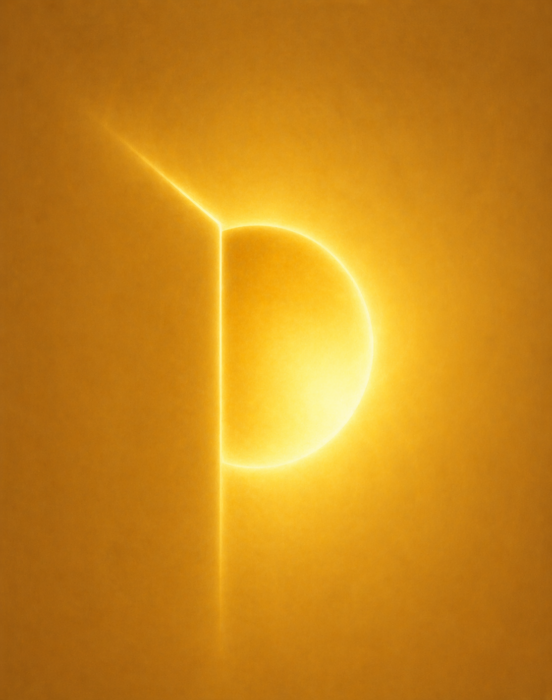
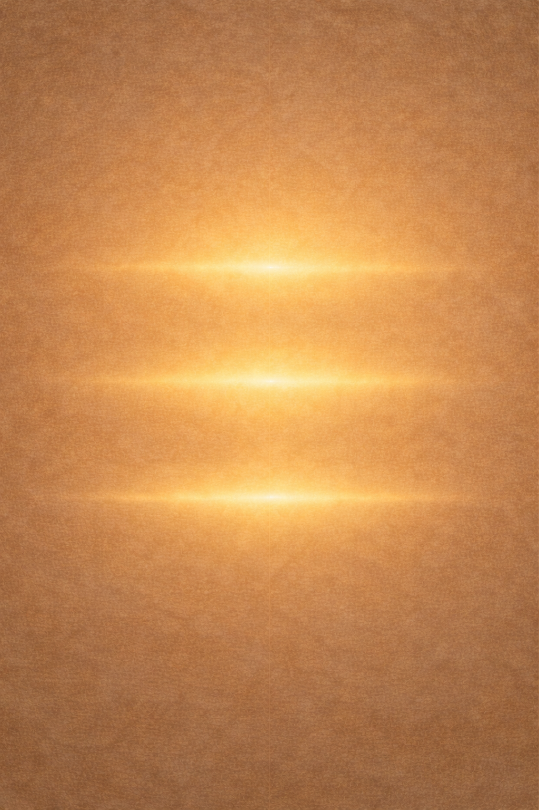
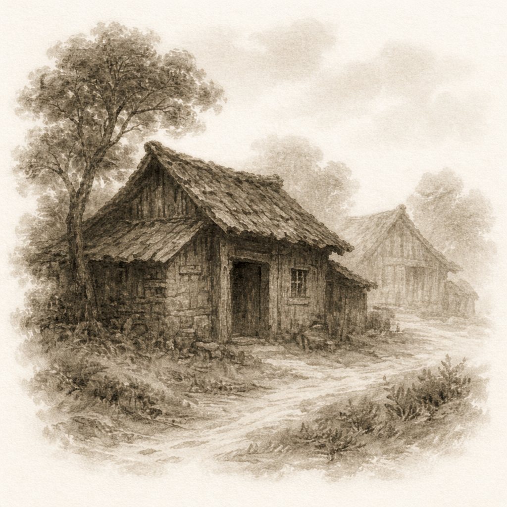

💡 Tip: Click the colored kanji to view stroke order animations


静かな浜辺に、三つの帯が重なる。 近く、間に、そして遠くに。 すべては、やがてつながっていく。
On a quiet shore, three bands rest in stillness— near, between, and far. All things, in time, become one flow.
小さな光が、内に宿る。 それは、静かに満ちていく。
A small light rests within— quietly gathering strength.

ただ一つ、そこにある。 比べるものも、分けるものもない。
There is only one— nothing to compare, nothing to divide.
白は、何も持たない。だから、すべてを受け取れる。
White holds nothing. and so, receives everything.
すべてが満ちている。 もう、数える必要はない。
All is filled— there is nothing left to count.